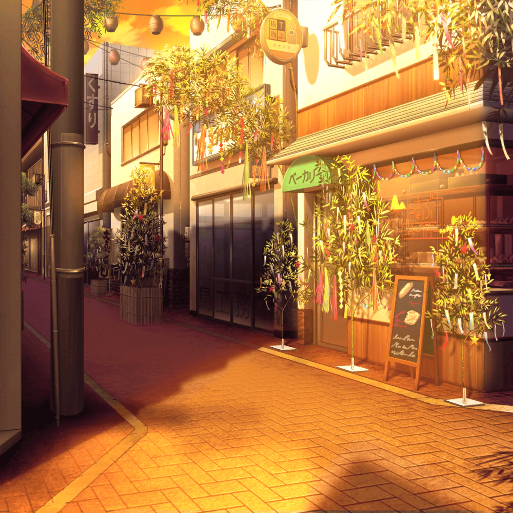

ファーストフード店
彩
いらっしゃいませー！
ご注文がお決まりのお客様はこちらのレジへどうぞー！
花音
い、いらっしゃいませ～！
彩
ポテトの大盛りとバーガーのセットですね。
少々お待ちください
花音
ポテト大盛りお願いしまーす
彩
ふぅ……
やっと、お客さんの波が落ち着いたね……
花音
すっごく混んでたよね……
やっぱり、七夕祭りだからかな
彩
うん、たぶん。
浴衣の子もいっぱいいたし、
みんな、お祭り楽しんでるんだろうな～
花音
いいよね、お祭り。
私もバイトじゃなければ行きたかったなぁ
彩
う～、なんか、
このままバイトで１日を終えるのは
もったいない気がする
彩
ねぇねぇ、花音ちゃん。今日って何時上がり？
私、１７時までなんだけど
花音
今日？
私も今日は１７時だよ
彩
わ、一緒！
じゃあさ、終わったら一緒に七夕祭りに行かない？
その時間だと、お祭り、少ししか楽しめないと思うけど
花音
あ、行きたい！
うん、一緒に行こう！
彩
ふふ、決まりだね。
よ～し、１７時までがんばるぞー！

商店街
彩
うわ～、もう日が落ちてきてるのにすごい人だね～。
ライブ会場にもこんなに人がいっぱいいたら、
歌うの楽しいだろうな～
花音
こんなにたくさんの人を前に……
き、緊張するね……
彩
た、確かに……
でも、きっと楽しいよ！
彩
……あ！ 花音ちゃん、見て見て！
ここで短冊書けるみたい。
せっかくだから、何か書いていこうよ
花音
う、うん
花音
（短冊かぁ……
いったい何を書こうかな～）
彩
よし、書けた♪
花音
ええ、もう？
え、えっと……どうしよう……
彩
大丈夫、ゆっくり考えて書いて。
まだまだ時間はいっぱいあるんだから
花音
（うう……お願いしたいことってなんだろう……
自分に自信がつきますようにとか……かな）
花音
（でも、それって短冊に書くお願いじゃないような……
そうだ……）
花音
……お、おまたせ。
書けたよ！
彩
お疲れ～。
それじゃあ、笹の葉に短冊を飾りに行こうか！
彩
よいしょ、っと……うん！
短冊飾るの完了～。
花音ちゃんは飾れた？
花音
う、うん……今、飾れたよ。
大丈夫かな？
風で飛ばされちゃったりしないかな……？
彩
しないと思うよ。
こんなにしっかり笹の葉にくっついてるし！
彩
というか、花音ちゃん、そんなふうに心配するぐらい
大事なお願いごとしたんだね。
ねえねえ、いったいどんなお願いごとにしたの？
花音
えっと、『ハロハピの活動で
いろんな人を笑顔にできますように』って……
彩ちゃんはどんなお願いごとにしたの？
彩
私のはこれだよ。
『パスパレで最高のライブができますように！』
彩
えへへ、まさかふたりともバンドのことを書いてるなんて
思わなかったよ。びっくり！
花音
本当だね。
ふふ、私達のお願いごとが叶うといいな～
彩
大丈夫、きっと叶うよ！
だから、お互いバンド活動がんばろう？
お願いごとを、叶えるためにも……！
花音
うん！